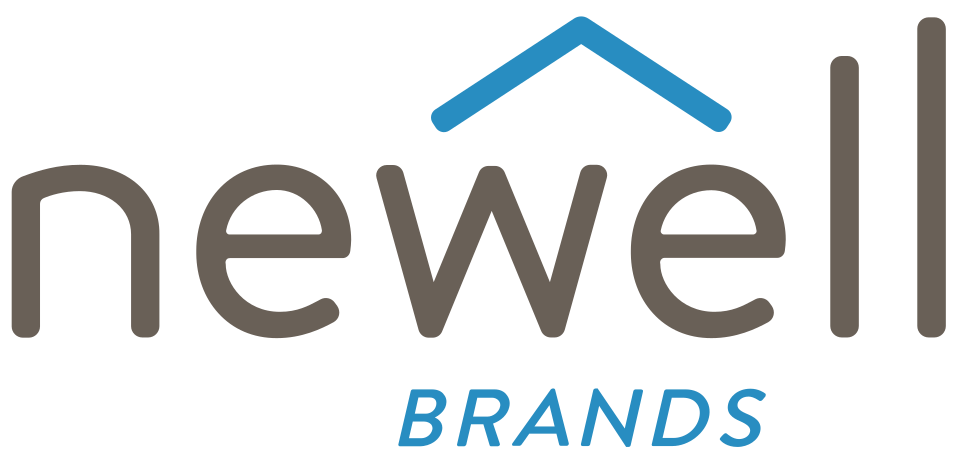

Newell Brands
Newell Brands는 미국의 소비재 및 상업용 제품 복합기업이다. 본사는 애틀랜타에 있으며 Rubbermaid, Coleman, Sharpie, Yankee Candle 등 여러 브랜드를 보유한다.
최종 업데이트

Newell Brands는 어떤 브랜드인가
Newell Brands는 소비자용과 상업용 제품을 다루는 미국의 복합기업이다. 보관·폐기물 용기와 정리 용품, 물병, 아웃도어 용품, 필기구, 접착제, 유아용품, 조리기구와 소형 가전, 향 제품 등 폭넓은 범주에서 브랜드를 운영한다.
Rubbermaid, Contigo, Coleman, Sharpie, Elmer's, Graco, Calphalon, Crock-Pot, Yankee Candle 등이 대표 브랜드이다. 회사는 1903년 Newell Manufacturing Company라는 이름으로 설립되어 인수를 거듭하며 사업 범위를 넓혔다.
1999년에는 Rubbermaid와 Graco 브랜드를 인수하고 사명을 Newell Rubbermaid로 바꿨다. 현재 전 세계 본사는 미국 애틀랜타에 있다.
Newell Brands는 어떻게 시작되고 성장했나
Newell Manufacturing Company는 1903년 뉴욕주 Ogdensburg에서 Edgar Newell이 금속 커튼 봉 제조업체로 설립했다. 1916년 F.
Woolworth 소매 체인이 도금 커튼 봉의 첫 고객이 되면서 제품이 전국적으로 유통되기 시작했고, 이는 대량 유통 전략의 출발점이 되었다. 1921년에는 일리노이주 Freeport의 Barnwell Mfg.
Co.를 인수해 Western Newell Manufacturing Company로 이름을 바꿨다. 1965년 Daniel C.
Ferguson이 사장에 올라 인수를 통한 성장 전략을 세웠고, 1972년 NASDAQ에 상장한 뒤 1979년 뉴욕증권거래소에 NWL 티커로 상장했다.
Newell Brands의 브랜드 아이덴티티는 무엇인가
인수를 통해 필기구, 주방용품, 아웃도어, 유아용품, 향 제품 등 서로 다른 범주의 브랜드를 한데 모은 소비재 복합기업이다.
Newell Brands의 대표 제품과 서비스는 무엇인가
제품군은 Rubbermaid 보관·폐기물 용기와 정리·재사용 용기류, Contigo·Bubba 물병, Coleman 아웃도어 용품으로 구성된다. 필기구에는 Paper Mate, Parker, Sharpie, Expo, Prismacolor, Waterman 등이 있고 접착제로는 Elmer's와 Krazy Glue가 있다.
유아용품은 Graco, Baby Jogger, NUK, Aprica 등이고, 조리기구와 소형 가전은 Calphalon, Sunbeam, Rival, Crock-Pot, FoodSaver, Oster, Mr. Coffee 등이다.
향 제품 부문에는 Yankee Candle, Chesapeake Bay Candle, Millefiori Milano, WoodWick이 속한다.
Newell Brands는 지금 어떤 상태인가
현재 전 세계 본사는 애틀랜타에 있으며, 2016년 뉴저지주 Hoboken으로 옮겼다가 3년 뒤 다시 돌아왔다. 2018년에는 Pure Fishing을 뉴욕에 기반을 둔 사모펀드 Sycamore Partners에 약 US$1.3 billion에 매각했다.
영국에서는 Parker Pen 등의 공장을 폐쇄하고 이전한 일로, 뉴질랜드 오클랜드의 Sistema 공장에서는 코로나19 봉쇄 기간의 작업 환경 문제로 비판을 받았다.
Newell Brands 로고는 어떻게 변해왔나
자주 묻는 질문
Newell Brands는 어느 나라 브랜드인가요?
Newell Brands는 미국의 홈·라이프스타일 브랜드입니다.
Newell Brands는 언제 설립되었나요?
Newell Brands는 1903년 설립되었습니다.
Newell Brands의 브랜드 아이덴티티는 무엇인가요?
인수를 통해 필기구, 주방용품, 아웃도어, 유아용품, 향 제품 등 서로 다른 범주의 브랜드를 한데 모은 소비재 복합기업이다.
Newell Brands의 대표 제품은 무엇인가요?
제품군은 Rubbermaid 보관·폐기물 용기와 정리·재사용 용기류, Contigo·Bubba 물병, Coleman 아웃도어 용품으로 구성된다.
Newell Brands는 어느 기업이 소유하고 있나요?
현재 전 세계 본사는 애틀랜타에 있으며, 2016년 뉴저지주 Hoboken으로 옮겼다가 3년 뒤 다시 돌아왔다.
Newell Brands의 본사는 어디에 있나요?
Newell Brands의 본사는 애틀랜타에 있습니다(위키데이터 기준).
Newell Brands의 공식 웹사이트는 어디인가요?
Newell Brands의 공식 웹사이트는 https://www.newellbrands.com/ 입니다.
출처와 검증
Newell Brands 관련 참고: 공식 웹사이트 · 위키데이터 Q667599 · 영어 위키백과. 브랜드명은 한글과 원어를 함께 표기하되 데이터에 없는 표기는 만들지 않습니다. 기원 국가·설립연도는 검수된 정의문에서 확인된 값을 우선하고, 없을 때만 공식 웹사이트 URL이 일치하는 위키데이터 개체의 값을 씁니다. 위키데이터 값은 2026-11-15 기준입니다.